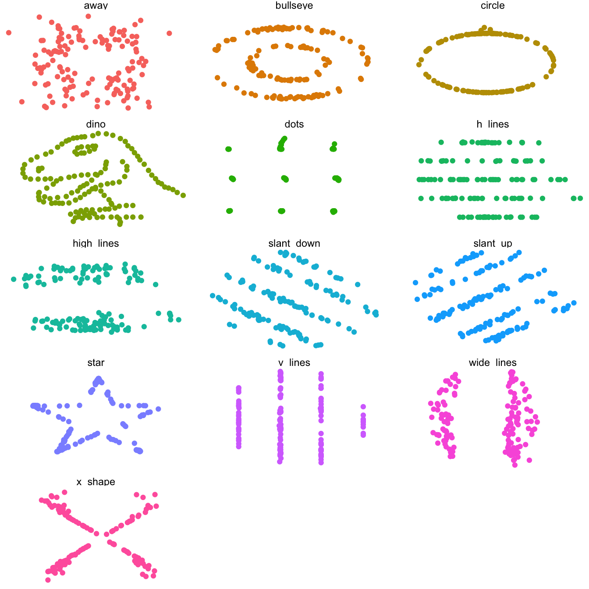

pacman::p_load(tidyverse,
here,
janitor)Descriptive Statistics
Measures of central tendency and dispersion
Learning objects
In this section we will learn…
- about measures of central tendency (mean, median, mode)
- about measures of dispersion (range, standard deviation)
- how to use the
summarise()function fromdplyr - how to produce summaries
.bygroup
Resources
Some suggested readings for this topic are:
Ch. 3, Sections 3.4-3.9 (Descriptive statistics, models, and distributions) in @winter_statistics_2019 (available online for students/employees of the HU Berlin via the HU Grimm Zentrum.
Section 4.5 (Groups) in Ch. 4 (Data Transformation) in @wickham_tidyverse_2023.
Set-up
Clear Environment
An important step we haven’t talked about much yet is making sure you always start a new script with a clear R environment. This means that we shouldn’t have any objects stored in the Environment, but we also shouldn’t have any packages loaded. This is because we want to make sure everything we are doing is achieved solely in this script, and is not dependent on a package or data we had loaded from some other script. To achieve this, you can click Session > Restart R to start with a fresh environment, or use the keyboard shortcut Cmd/Ctrl+Shift/Strg+0.
Packages
We need to load the tidyverse, here, and janitor packages. The latter two we need because we’ll be loading in local CSV datasets.
Load data
We will be using two datasets today: a slightly altered version of the groesse_geburtstag dataset from the last section (groesse_geburtstag_ws2324.csv), and languageR_english.csv, which is a shorter version of the english dataset from the languageR package. If you don’t have these data already, download them directly into your daten folder from the course GitHub (press ‘Download raw file’ near the ‘Raw’ button):
df_groesse <- read_csv(here("daten", "groesse_geburtstag_ws2324.csv"))df_eng <- read_csv(here("daten", "languageR_english.csv")) |>
clean_names() |>
# fix some wonky variable names:
rename(rt_lexdec = r_tlexdec,
rt_naming = r_tnaming)Deskriptive statistics
Descriptive statistics qunatitatively describe the central tendency, variability, and distribution of data. They are sometimes also referred to as summary statistics, because we summarise the observed data. Some common summary statistics include the range of values (minimum, maximum), the mean value, and the standard deviation. Descriptive statistics help us to the full scope understand our data, and are an important step in exploring our dataset before running more advanced inferential statistics (which we will not cover in this course).
Number of observations (\(n\))
The number of observations in a dataset is not a statistic, but is important information when summarising or describing data. When we have more data (higher \(n\)), we can have more confidence in the conclusions we draw from our data because we have more evidence. Conversely, when we have less data (lower \(n\)), our summary statistics may not be generalisable to the broader population. We can check the number of observations in a dataset using the native R nrow() function:
nrow(df_groesse)[1] 9length() versus nrow()
The function length() tells us how many (horizontal) values there are in an object. If that object is a data frame (instead of a vector), it tells us how many columns we have.
length(df_groesse)[1] 5However, if that object is a vector, then length() gives us the number of observations.
vector <- c(1,5,2,6,8,4,7,8,3)
length(vector)[1] 9Measures of central tendency
Measures of central tendency quantitavely describe the centre of our data. You have likely already encounted three measures of central tendency before: the mean, median, and mode.
Mean (\(\mu\) or \(\bar{x}\))
The mean, or average, is the sum of all values divided by the number of values (as in Equation \(\ref{eq-mean}\)). In mathematical notation, sum is written with the capital Greek sigma (\(\sum\)), as in Equation \(\ref{eq-sigma}\).
\[\begin{align} \mu &= \frac{sum\;of\;values} {n} \label{eq-mean} \\ \bar{x} &= \frac{\sum{x}} {n} \label{eq-sigma} \end{align}\]
Population mean (\(\mu\)) versus sample mean (\(\bar{x}\))
Both equations mean the same thing, but use different notation to represent the same equation. While \(\mu\) represents the population mean, while \(\bar{x}\) represents the sample mean. The population mean is the true mean of some measure in an entire population (e.g., heights of all students at the Humboldt-Universität zu Berlin). A sample mean is the mean of a sample population from which we collected our data. For example, we have 9 observations in df_groesse. This data represents a sample of data from a larger population.
We can easily compute the mean by hand when we have only a few values. Recall our dataset from last week where we collected our heights in centimeters (171, 168, 182, 190, 170, 163, 164, 167, 189). There are 9 values, so we have to add up these heights and divide the total by 9.
171+ 168+ 182+ 190+ 170+ 163+ 164+ 167+ 189 / 9[1] 1396This produces a mean height of 1396 cm. This can’t be right, so what went wrong? We can fix the equation above by wrapping the heights with parantheses (()) before dividing by \(n\).
(171+ 168+ 182+ 190+ 170+ 163+ 164+ 167+ 189) / 9[1] 173.7778This problem was caused by the order of operations, which is described in more detail below. The important thing to remember is that you can be sure the outcome of a certain operation will be performed before any other operations if you wrap it in parantheses.
PEMDAS
You might recall learning about the order of operations in math class as a kid. This refers to the order of execution when we have a mathematical equation with multiple operators, such as division, addition, and multiplication. R follows PEMDAS, which stands for:
| letter | operation | R |
|---|---|---|
| P | parantheses | (x + y) |
| E | exponents | x^y |
| M | mutiply | x*y |
| D | divide | x/y |
| A | addition | x + y |
| S | subtraction | x - y |
So, if an equation has more than one operation, such as 171+ 168+ 182+ 190+ 170+ 163+ 164+ 167+ 189 / 9, which has both addition and division, the division will take place first: 189 / 9 occurs before addition all the numbers together. This is why we wrap the addition of the observations in parantheses to ensure we are dividing the sum of these numbers by 9, rather than adding the first 8 numbers with the quotient of 189 / 9 (i.e., 21).
We can also save the results of an equation as an object, or multiple values as a vector (a list of values of the same class). We could then use the functions sum() and length() to compute the mean, or simply use the mean() function.
# save heights as a vector
heights <- c(171, 168, 182, 190, 170, 163, 164, 167, 189)
# divide the sum of heights by the n of heights
sum(heights)/length(heights)[1] 173.7778# or use the mean() function
mean(heights)[1] 173.7778Our data is not often stored in a single vector, but rather a dataset. We can run the mean() function on a variable in a data frame by using the $ operator to indicate we want to select a column from a data frame (dataframe$variable).
mean(df_groesse$groesse)[1] 173.6667The $ operator is part of native R, and similar to df_groesse |>select(groesse) in dplyr syntax.
Median
Another measure of central tendency is the median, which is the the value in the middle of the dataset. If you line up all your values in ascending (or descending) order, the middle value is the median. For example, if you have 5 values, the 3rd value is the median. If you have 6 values, the mean of the 3rd and 4th values are the median. Half of the data lie below the median, and half above it.
To sort our data in ascending order using base R, we can use the sort() function. We can then just count which is the middle value:
sort(df_groesse$groesse)[1] 163 164 167 167 170 171 182 189 190This is easy when we just have a few observations. We could alternatively just use the function median().
median(df_groesse$groesse)[1] 170An important feature of the median is that it is not affected by outliers, or extreme values. Let’s see what happens when we change our tallest height (190cm) to be the height of the current tallest person in the world: 251 cm.
df_groesste <- df_groesse |> mutate(groesse = ifelse(groesse == 190, 251, groesse))sort(df_groesste$groesse)[1] 163 164 167 167 170 171 182 189 251median(df_groesste$groesse)[1] 170mean(df_groesste$groesse)[1] 180.4444We see that the mean changed from approximately 174cm to 180cm. The median remained the same (170 cm), however, because the middle value is independent of the other values in a dataset. For this reason the median is often reported instead of the mean for data that has heavy skews to more extreme values, such as when reporting incomes in a population. Average incomes can be greatly skewed due to a small group of extremely high-earners, and are not typically representative of the income of the majority of citizens.
Mode
The mode is the value that occurs the most in a data set, and is another measure of central tendency. There’s no R function to determine the mode, but we’ve already seen some common ways to visualise it: with a histogram or a density plot.
df_groesse |>
ggplot(aes(x = groesse)) +
geom_histogram(binwidth = .5) +
theme_minimal() Measures of dispersion
Measures of central tendency describe the middle of the data (usually). Measures of dispersion describe the spread of data points, and tell us something about how the data as a whole is distributed.
Range
The range of values can refer to the highest (maximum) and lowest (minimum) values, or the difference between highest and lowest value.
The base R function max() and min() print the highest and lowest values.
max(heights)[1] 190min(heights)[1] 163Or, we can simply use the range() function, which prints these two numbers side-by-side.
range(heights)[1] 163 190We can find out the difference between these values by subtracting the minimum value from the maximum value.
max(heights) - min(heights)[1] 27In a histogram or density plot, these values are represented by the lowest and heights values on the x-axis.
Standard deviation (sd or \(\sigma\))
Standard deviation is a measure of how dispersed data is in relation to the mean. A low standard deviation means data are clustered around the mean (i.e., there is less spread), while a high standard deviation means data are more spread out. Whether a standard deviation is high or low is dependent on the scale and unit of measurement your data is in. Standard deviation is very often given whenever mean is reported.
Standard deviation (sd) is equal to the square root (\(\sqrt{}\) or sqrt() in R) of the sum of squared value deviations from the mean (\((x - \mu)^2\)) divided by the number of observations minus 1 (\(n-1\)), given in Equation \(\ref{eq-sd}\).
\[\begin{align} \sigma & = \sqrt{\frac{(x_1-\mu)^2 + (x_2-\mu)^2 + ... + (x_N-\mu)^2}{N-1}} \label{eq-sd} \end{align}\]
This looks intimidating, but we can calcuate standard deviation in R using the sd() function.
sd(heights)[1] 10.46157However, knowing how to calculate standard deviation by hand gives us an understanding of what the number represents. Let’s practice calculating standard deviation for a small set of values. Keeping in mind the equation for standard deviation in \(\ref{eq-sd}\), we can calculate standard deviation by hand if we know the value of each observation, the mean of these values, and the number of these values. For example, in a vector with 3 observations (3,5,9), our values (\(x\)) are:
values <- c(3,5,16)
values[1] 3 5 16If we plug these into the equation for standard deviation we get Equation \(\ref{eq-sd1}\).
\[\begin{align} \sigma & = \sqrt{\frac{(3-\mu)^2 + (5-\mu)^2 + (16-\mu)^2}{N-1}} \label{eq-sd1} \end{align}\]
Our mean (\(\mu\)) is:
mean(values)[1] 8If we add this to Equation \(\ref{eq-sd1}\), we get Equation \(\ref{eq-sd2}\).
\[\begin{align} \sigma & = \sqrt{\frac{(3-8)^2 + (5-8)^2 + (16-8)^2}{N-1}} \label{eq-sd2} \end{align}\]
The number of values (\(n\)) is:
length(values)[1] 3If we add this to Equation \(\ref{eq-sd2}\), we get Equation \(\ref{eq-sd3}\).
\[\begin{align} \sigma & = \sqrt{\frac{(3-8)^2 + (5-8)^2 + (16-8)^2}{3-1}} \label{eq-sd3} \end{align}\]
If we carry out all of the operations following PEDMAS, then we get Equations \(\ref{eq-sd4}\) through \(\ref{eq-sd}\):
\[\begin{align} \sigma & = \sqrt{\frac{(-5)^2 + (-3)^2 + (8)^2}{3-1}} \\ \label{eq-sd4} \\ & = \sqrt{\frac{25 + 9 + 64}{3-1}} \\ & = \sqrt{\frac{98}{2}} \\ & = \sqrt{49} \\ & = 7 \end{align}\]
To check our work, we calculate the standard deviation (\(\sigma\)) in R:
sd(values)[1] 7Why standard deviation?
Standard deviation gives us a measure of how “tight” the observed values are to the mean. If most of the observations are very close to the mean, the standard deviation will be a small number relative to the mean. If there are many observations with large deviations from the mean, the standard deviation will tend to be a large number (relative to the mean).
Different datasets can have the same mean but vastly different standard deviations. For example:
values2 <- c(55,55,55,55,55,57,57,57,57,57)
values3 <- c(1,1,1,1,100,100,100,100,100)mean(values2)[1] 56mean(values3)[1] 56We see that values2 and values3 have the same mean. We might therefore conclude the data are similar. But their standard deviations will differ, because their respective observed values all differ in how far they deviate from the mean. Which vector do you think will have the smallest standard deviation? Why?
sd(values2)[1] 1.054093sd(values3)[1] 52.17758The larger standard deviation for values3 reflects the fact that the values tended to be very far from the mean. The smaller standard deviation for values2 reflects the fact that the value for this variable tended to be quite close to the mean.
Calculating standard deviation
- first, calculate the deviation of each value from the mean
- and square this value
- add up all these squared deviation values
- divide by the number of observations minue one (\(n-1\))
- this is now the variance, to get the population standard deviation, compute the square root of this value
\[\begin{align} \sigma & = \sqrt\frac{(171-173.8)^2 + (168-173.8)^2 + (182-173.8)^2 + (190-173.8)^2 + (170-173.8)^2 + (163-173.8)^2 + (164-173.8)^2 + (167-173.8)^2 + (189-173.8)^2 }{9-1} \\ & = \sqrt\frac{(-2.8)^2 + (-5.8)^2 + (8.2)^2 + (16.2)^2 + (-3.8)^2 + (-10.8)^2 + (-9.8)^2 + (-6.8)^2 + (15.2)^2 }{9-1} \\ & = \sqrt\frac{7.84 + 33.64 + 67.24 + 262.44 + 14.44 + 116.64 + 96.04 + 46.24 + 231.04 }{9-1} \\ & = \sqrt{\frac{875.56}{8}} \\ & = \sqrt{109.445} \\ & = 10.4616 \end{align}\]
Why do we square each observation’s deviance from the mean, only to later calculate the square root of their sum divided by \(N-1\)? Since half of our observations will lie below the mean and half above, when we subtract the mean from the values half of the resulting differences will be negative and half of them positive. When we add positive and negative values together, they cancel each other out. So, if we square all these deviations from the mean, all the values will be positive (a positive number multiplied by a positive number is a positive number, while a negative number multiplied by itself also results in a positive number). If we then calculate the square root of these values, we’d get the original magnitude of the deviance but always as a positive value.
Population properties
Both the mean and standard deviation tell us something about the population from which our data sample comes from. The more observations we collect, the more precise these measures will tend to be on average.
Summary statistics with R
We’ve already seen some useful functions to calculate summary statistics (e.g., mean(), median(), sd()). However, we will typically want to produce multiple summary statistics at once, and to compare summary statistics between groups. To achieve this, the dplyr package from the tidyverse has some helpful functions. Let’s now use the df_eng dataset to learn about these dplyr verbs.
dplyr::summarise
The summarise() function from dplyr computes summaries of data, but we have to tell it what to compute, and for which variable(s). For example, the n() function produces the number of observations (only when used inside summarise() or mutate()). Let’s first check how many observations we have in the df_eng dataset:
df_eng |>
summarise(N = n())# A tibble: 1 × 1
N
<int>
1 4568Now let’s take a look at a histogram of rt_lexdec, the variable containing lexical decision response times in milliseconds:
df_eng |>
ggplot() +
aes(x = rt_lexdec) +
geom_histogram()We see that response time ranged from about 500 ms to 1320 ms, with most responses between 550 ms and 900 ms. We also see a bimodal distribution, in that there are two modes (two peaks). The overall mode is around 700 ms (500 observations), with a second peak around 600 ms (~420 observations).
We can also run multiple computations at once. Let’s also generate the mean and standard deviation of the lexical decision task (rt_lexdec, in milliseconds).
df_eng |>
summarise(mean_lexdec = mean(rt_lexdec, na.rm=T),
sd_lexdec = sd(rt_lexdec, na.rm = T),
N = n()) # A tibble: 1 × 3
mean_lexdec sd_lexdec N
<dbl> <dbl> <int>
1 708. 115. 4568Now we see that the average lexical decision response time was 708.1 ms, with a standard deviation of 114.9.
And we can specify calculations using typical mathematical operators (e.g., +, -, /, *, ^ …) and/or functions. What was the difference between the longest and the shortest lexical decision response time?
df_eng |>
summarise(range_lexdec = max(rt_lexdec) - min(rt_lexdec))# A tibble: 1 × 1
range_lexdec
<dbl>
1 828.
Missing values
Some calculations aren’t possible if there are missing values. The variable rt_naming has a missing value. We can see that in the output from the summary() function, which removes any NA values before computing summary statistics.
df_eng |>
select(rt_lexdec, rt_naming) |>
summary() rt_lexdec rt_naming
Min. : 495.4 Min. :412.3
1st Qu.: 617.4 1st Qu.:468.1
Median : 699.6 Median :570.6
Mean : 708.1 Mean :565.9
3rd Qu.: 775.3 3rd Qu.:658.4
Max. :1323.2 Max. :808.9
NA's :1 The mean() function does not remove NA values, however.
df_eng |>
summarise(mean_naming = mean(rt_naming))# A tibble: 1 × 1
mean_naming
<dbl>
1 NAWhat do we do with missing values? When working with real data, how we deal with missing values is not trivial. E.g., we might want to convert all NA values to 0 if we want them to contribute to the calculation of the mean. More often than not though we want to just remove them.
We can easily do this with the dplyr verb drop_na():
df_eng |>
drop_na() |>
summarise(mean_naming = mean(rt_naming))# A tibble: 1 × 1
mean_naming
<dbl>
1 566.Grouping variables
We don’t always just want to know the summary statistics for an entire dataset, however. We usually want to compare certain groups (e.g., comparing groesse between L1 speaker groups)
.by =
The brand new (and experimental) .by = argument in summarise() computes our calculations on grouped subsets of the data. It takes a variable (i.e., column name), and groups by the levels of this variable.
df_eng |>
drop_na() |>
summarise(mean_lexdec = mean(rt_lexdec),
sd_lexdec = sd(rt_lexdec),
N = n(),
.by = age_subject) |>
arrange(mean_lexdec)# A tibble: 2 × 4
age_subject mean_lexdec sd_lexdec N
<chr> <dbl> <dbl> <int>
1 young 630. 69.1 2283
2 old 787. 96.2 2284Group by multiple variables
- we can also group by multiple variables
- for this we need
concatenate(c())
- for this we need
- we’ll filter to only have a couple of carriers, just so our output isn’t too long
df_eng |>
drop_na() |>
summarise(mean_lexdec = mean(rt_lexdec),
sd_lexdec = sd(rt_lexdec),
N = n(),
.by = c(age_subject, word_category)) |>
arrange(age_subject)# A tibble: 4 × 5
age_subject word_category mean_lexdec sd_lexdec N
<chr> <chr> <dbl> <dbl> <int>
1 old N 790. 101. 1452
2 old V 780. 86.5 832
3 young N 633. 70.8 1451
4 young V 623. 65.7 832group_by()
- before
.by(), we used to use thedplyrverbgroup_by()andungroup()- I prefer the new
.by, because it keeps the grouping local (no need toungroup()) - keep this in mind, you might see
group_by()in the wild
- I prefer the new
df_eng |>
group_by(age_subject, word_category) |>
summarise(mean_lexdec = mean(rt_lexdec),
sd_lexdec = sd(rt_lexdec),
N = n()) |>
ungroup() |>
arrange(age_subject)# A tibble: 4 × 5
age_subject word_category mean_lexdec sd_lexdec N
<chr> <chr> <dbl> <dbl> <int>
1 old N 790. 101. 1452
2 old V 780. 86.5 832
3 young N 633. 70.8 1452
4 young V 623. 65.7 832Anscombe’s Quartet
Francis Anscombe constructed 4 datasets in 1973 to illustrate the importance of visualising data before analysing it and building a model. These four plots represent 4 datasets that all have nearly identical mean and standard deviation, but very different distributions.
| grp | mean_x | mean_y | min_x | min_y | max_x | max_y | crrltn |
|---|---|---|---|---|---|---|---|
| Group 1 | 9 | 7.500909 | 4 | 4.26 | 14 | 10.84 | 0.8164205 |
| Group 2 | 9 | 7.500909 | 4 | 3.10 | 14 | 9.26 | 0.8162365 |
| Group 3 | 9 | 7.500000 | 4 | 5.39 | 14 | 12.74 | 0.8162867 |
| Group 4 | 9 | 7.500909 | 8 | 5.25 | 19 | 12.50 | 0.8165214 |
DatasaurRus
The datasauRus package [@datasauRus-package] contains some more datasets that have similar mean and sd, but different distributions, given in Table 2.
pacman::p_load("datasauRus")datasaurus_dozen |>
group_by(dataset) |>
summarize(
mean_x = mean(x),
mean_y = mean(y),
std_dev_x = sd(x),
std_dev_y = sd(y),
corr_x_y = cor(x, y)
) |>
knitr::kable() |>
kableExtra::kable_styling(font_size = 20)| dataset | mean_x | mean_y | std_dev_x | std_dev_y | corr_x_y |
|---|---|---|---|---|---|
| away | 54.26610 | 47.83472 | 16.76983 | 26.93974 | -0.0641284 |
| bullseye | 54.26873 | 47.83082 | 16.76924 | 26.93573 | -0.0685864 |
| circle | 54.26732 | 47.83772 | 16.76001 | 26.93004 | -0.0683434 |
| dino | 54.26327 | 47.83225 | 16.76514 | 26.93540 | -0.0644719 |
| dots | 54.26030 | 47.83983 | 16.76774 | 26.93019 | -0.0603414 |
| h_lines | 54.26144 | 47.83025 | 16.76590 | 26.93988 | -0.0617148 |
| high_lines | 54.26881 | 47.83545 | 16.76670 | 26.94000 | -0.0685042 |
| slant_down | 54.26785 | 47.83590 | 16.76676 | 26.93610 | -0.0689797 |
| slant_up | 54.26588 | 47.83150 | 16.76885 | 26.93861 | -0.0686092 |
| star | 54.26734 | 47.83955 | 16.76896 | 26.93027 | -0.0629611 |
| v_lines | 54.26993 | 47.83699 | 16.76996 | 26.93768 | -0.0694456 |
| wide_lines | 54.26692 | 47.83160 | 16.77000 | 26.93790 | -0.0665752 |
| x_shape | 54.26015 | 47.83972 | 16.76996 | 26.93000 | -0.0655833 |
If we plot the datasets, they all look very different (Figure 2)!

The point here being: always plot your data, don’t just look at the descriptive stats!! Both are very important to understanding your data. We’ve already seen how to plot our raw data using histograms, density plots, barplots, and scatterplots. Next week we’re going to look at how to plot our summary statistics, and how to include the raw data in the plot with multi-part plots.
Learning objectives 🏁
Today we learned…
- about measures of central tendency ✅
- about measures of dispersion ✅
- how to use the
summarise()function fromdplyr✅ - how to produce summaries
.bygroup ✅
Aufgaben
- Calculate the standard deviation of the values
152, 19, 1398, 67, 2111without using the functionsd()- show your work. The following R syntax might be useful (depending on how you decide to do it):
c()mean()x^2calculates the square of a value (here,x)sqrt()calculates the square rootlength()produces the number of observations in a vector
- show your work. The following R syntax might be useful (depending on how you decide to do it):
- Use the function
sd()to print the standard deviation of the values above. Did you get it right? - Using
summarise, print the mean, standard deviation, and number of observations fordep_delay.- Hint: do you need to remove missing values (
NAs)?
- Hint: do you need to remove missing values (
- Do the same, but add the
.by()argument to find the departure delay (dep_delay) per montharrange()the output by the mean departure delay
Session Info
Created with R version 4.3.0 (2023-04-21) (Already Tomorrow) and RStudioversion 2023.9.0.463 (Desert Sunflower).
sessionInfo()R version 4.3.0 (2023-04-21)
Platform: aarch64-apple-darwin20 (64-bit)
Running under: macOS Ventura 13.2.1
Matrix products: default
BLAS: /Library/Frameworks/R.framework/Versions/4.3-arm64/Resources/lib/libRblas.0.dylib
LAPACK: /Library/Frameworks/R.framework/Versions/4.3-arm64/Resources/lib/libRlapack.dylib; LAPACK version 3.11.0
locale:
[1] en_US.UTF-8/en_US.UTF-8/en_US.UTF-8/C/en_US.UTF-8/en_US.UTF-8
time zone: Europe/Berlin
tzcode source: internal
attached base packages:
[1] stats graphics grDevices utils datasets methods base
other attached packages:
[1] datasauRus_0.1.6 patchwork_1.1.3 janitor_2.2.0 here_1.0.1
[5] lubridate_1.9.2 forcats_1.0.0 stringr_1.5.0 dplyr_1.1.3
[9] purrr_1.0.2 readr_2.1.4 tidyr_1.3.0 tibble_3.2.1
[13] ggplot2_3.4.3 tidyverse_2.0.0
loaded via a namespace (and not attached):
[1] gtable_0.3.4 xfun_0.39 htmlwidgets_1.6.2 lattice_0.21-8
[5] tzdb_0.4.0 vctrs_0.6.3 tools_4.3.0 generics_0.1.3
[9] parallel_4.3.0 fansi_1.0.4 highr_0.10 pacman_0.5.1
[13] pkgconfig_2.0.3 Matrix_1.5-4 webshot_0.5.4 lifecycle_1.0.3
[17] compiler_4.3.0 farver_2.1.1 munsell_0.5.0 snakecase_0.11.0
[21] htmltools_0.5.5 yaml_2.3.7 pillar_1.9.0 crayon_1.5.2
[25] nlme_3.1-162 tidyselect_1.2.0 rvest_1.0.3 digest_0.6.33
[29] stringi_1.7.12 labeling_0.4.3 splines_4.3.0 rprojroot_2.0.3
[33] fastmap_1.1.1 grid_4.3.0 colorspace_2.1-0 cli_3.6.1
[37] magrittr_2.0.3 utf8_1.2.3 withr_2.5.0 scales_1.2.1
[41] bit64_4.0.5 timechange_0.2.0 rmarkdown_2.22 httr_1.4.6
[45] bit_4.0.5 hms_1.1.3 kableExtra_1.3.4 evaluate_0.21
[49] knitr_1.44 viridisLite_0.4.2 mgcv_1.8-42 rlang_1.1.1
[53] glue_1.6.2 xml2_1.3.4 svglite_2.1.1 rstudioapi_0.14
[57] vroom_1.6.3 jsonlite_1.8.7 R6_2.5.1 systemfonts_1.0.4